|
Mihai Eminescu pe marci postale |
Pagina dedicata poetului tineretii mele
Exista poeti care concentraza in opera lor sufletul poetic al tarilor in care au trait si al cetatenilor lor. Unul dintre acest rari poeti este poetul rom‚n Mihai Eminescu, nascut pe 15 ianuarie 1850 la Ipotesti, Moldova, Imperiul Otoman si decedat pe 15 iunie 1889 Ón Bucuresti, Rom‚nia.
Orice locuitor cultivat al Rom‚niei Ói cunoaste poeziile, precum de exemplu versurile (traduse Ón engleza de catre autorul prezentului sit):
| Ce-ti
doresc eu tie, dulce Romanie, Tara mea de glorii, tara mea de dor? Bratele nervoase, arma de tarie, La trecutu-ti mare, mare viitor! |
What
I wish you, sweet Romania My country of glory, my country of longing? Nervous arms, the weapon of strength, To your great past, a great future! |
Acesta este motivul pentru care am decis sa folosesc un fragment din aceasta poezie pe pagina de garda a prezentului sit. Deoarece a fost si este atat de popular, diferitele administratii postale rom‚nesti l-au comemorat pe marele poet, si aceasta independent de orientarea ideologica a guvernelor de epoca.
 |
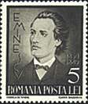 |
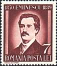 |
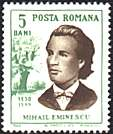 |
Mihai Eminescu a fost poetul care a transformat atat forma, cat si continutul poeziei rom‚nesti, creand o scoala poetica care a influentat puternic pe pe scriitorii si pooetii rom‚ni ai sfarsitul sec. 19 si inceputul sec. 20.
El este considerat parintele asa numitului limbaj literar rom‚nesc care este de peste un secol limba oficiala in Romania.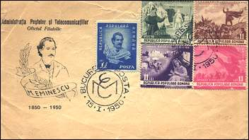 |
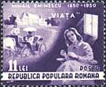 |
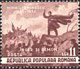 |
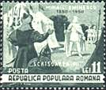 |
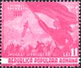 |
Eminescu a fost educat in centrul cultural din Cernauti (azi Chernivtsy, Ukraine), la universitatile din Viena (1869ñ72) si Berlin (1872ñ74), unde a fost influentat de filozofia germana si de literatura vestica. In anul 1874 el a fost numit inspector scolar si bibliotecar la universitatea din Iasi, post din care si-a dat repede demisia pentru a deveni redactorul sef al ziarului conservator Timpul. Activitatea lui literara a incetat la sfarsitul anului 1883, din cauza unei boli psihice care a dus intr-un tarziu la moartea lui intr-un azil.
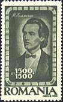 |
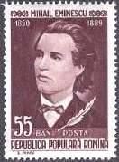 |
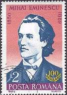 |
Talentul lui Eminescu a fost revelat pentru prima data in 1870 prin doua poeme publicate in Convorbiri literare, organ al societatii Junimea din Iasi. Au urmat alte poeme care au facut ca el sa fie considerat ca cel mai important poet al vremii. Inclinat catre misticism si avand o dispozitie melancolica, el traia cu gandul la gloria trecutului medieval al Rom‚niei si a folclorului ei, pe care poetul si-a bazat unul dintre cele mai valoroase poeme ale sale, "Luceaf„rul" (1883). Datorita acestui poem Eminescu este deseori numit si Luceafarul poeziei rom‚nesti, asta si datorita frumusetii sale deosebite (vezi marcile de mai sus). Luceafarul are in limba rom‚na si semnificatia unei persoane deosebite, care radiaza lumina in jurul ei.
| La steaua care-a r„s„rit E-o cale-at‚t de lunga, Ca mii de ani i-au trebuit Luminii s„ ne-ajunga. Poate de mult s-a stins Ón drum Icoana stelei ce-a murit Tot astfel c‚nd al nostru dor |
La steaua |
| 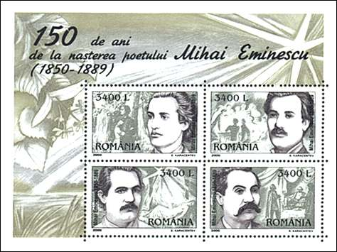 |
Poezia lui Eminescu are o simplicitate distinctiva a limbii, o manuire maiastra a ritmului si rimei, o profunditate a gandirii si o plasticitate a expresiei care au influentat generatii de poeti rom‚ni. Poemele sale au fost traduse in mai multe limbi, in special in limba germana. In afara unor studii si eseuri, cele mai cunoscute lucrari din proza sa sunt povestirile Cezara si Bietul Dionisos (1872).
El este de asemeni autorul unor celebre povesti. Dupa: Encyclopedia Britannica on-line.Puteti gasi aici cele mai cunoscute poezii ale lui Eminescu, atat in versiunea originala, cat si traduse in alte limbi.
| Published:08/09/2001. Revised: 08/09/01. Copyright © 2001 by Victor Manta, Switzerland. All rights reserved worldwide. |
|